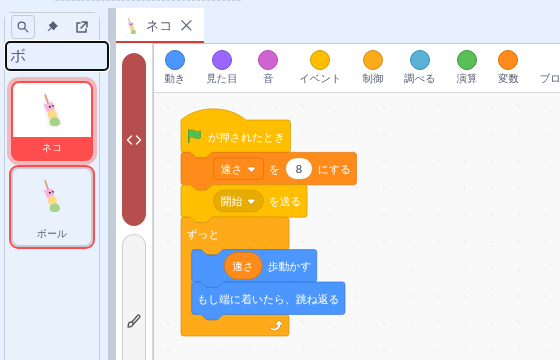
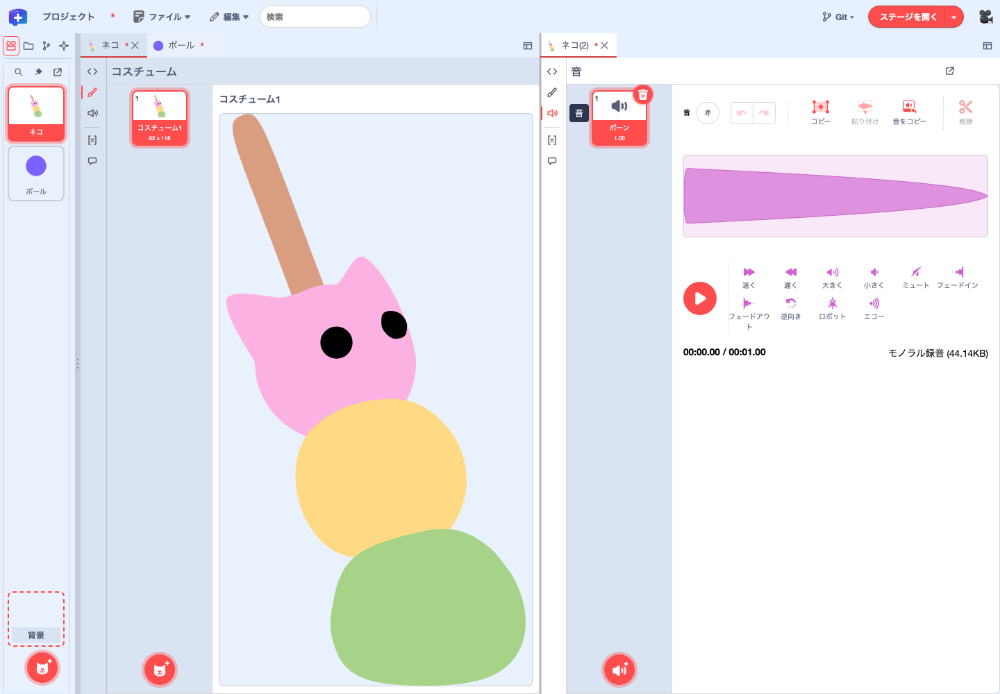
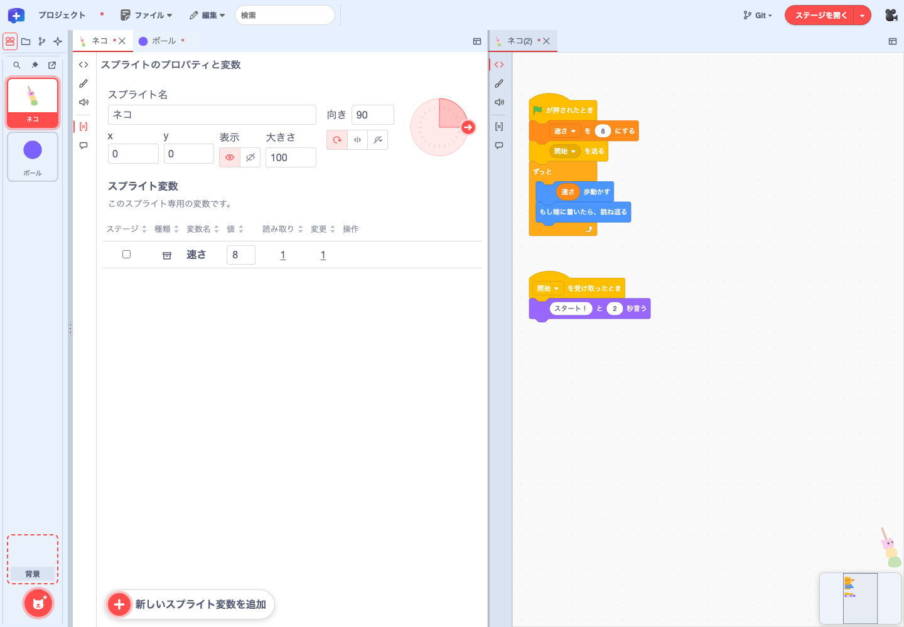
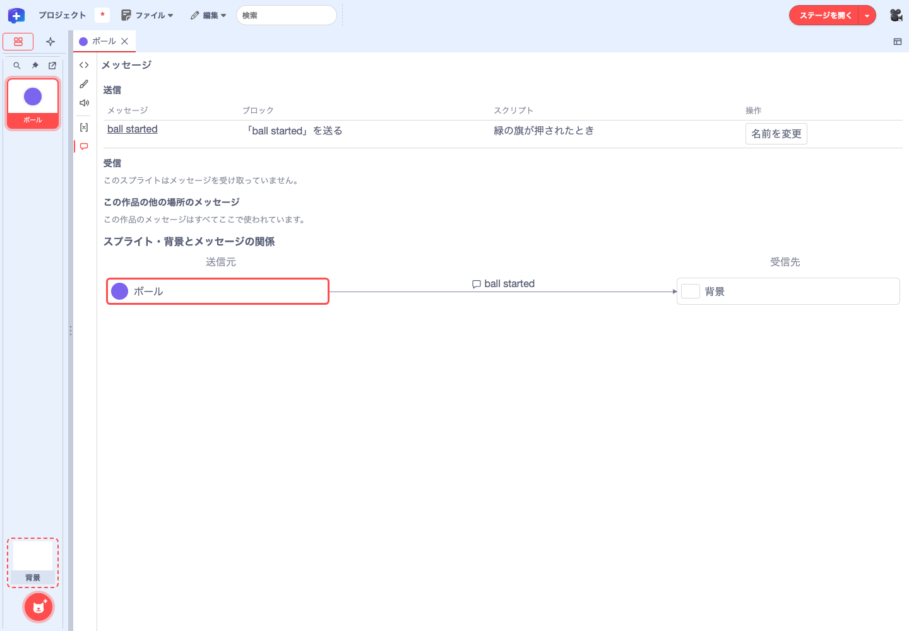
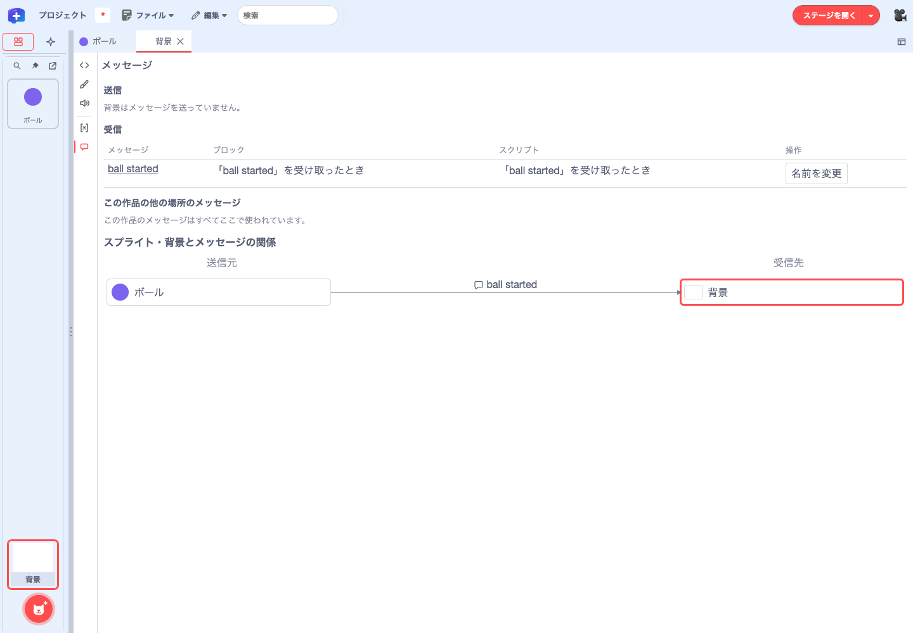

機能ガイド 3/12 · 2026年11月8日更新
スプライトと背景を編集する
左のスプライト一覧で対象を選び、編集パネル左端の縦のボタンで、コード・コスチューム・音・変数など・メッセージを切り替えます。
3.1 スプライト一覧で探す・固定する
左側のスプライト一覧で編集する対象を選びます。一覧上部には「スプライトを検索」「スプライト一覧を固定表示」「アンドック」のボタンが並びます。「スプライトを検索」で名前の一部を入力すると、最初に一致したタイルまでスクロールし、そのタイルを枠で強調します。「背景」のタイルからはステージの背景を開けます。

ピンのボタンで固定表示を解除すると、ピンに斜線が付き、一覧は左端に収まります。左端にポインターを置くか「スプライト一覧を展開」を押すと一覧が開きます。固定表示中に一覧の幅を広げると、タイルを複数列に並べられます。作品全体からブロックや素材を探すには、最上段の検索欄を使います。
スプライトのタイルを右クリックすると、「開く」「複製」「書き出し」「名前を変える」「削除」「フォルダーを作成」をアイコン付きのメニューから選べます（右クリックメニュー）。
3.2 スプライトのタブと編集ボタン
一覧でスプライトを選ぶと、編集パネルの上段にタブが開きます。開いたスプライトは上段のタブで切り替えられ、タブを右クリックすると名前を変えられます。
編集パネルの左端には、縦長のボタンが5つ並びます。上から「コード」、「コスチューム」（背景では「背景」）、「音」、「変数など」、「メッセージ」で、選んでいるボタンに色が付きます。ボタンの名前はツールチップで確認できます。

3.3 コスチュームと音を編集する
「編集パネルのレイアウト」から「パネルを横に分割」を選び、同じスプライトの「コスチューム」と「音」を左右に開きます。「音」で素材を選ぶと波形が表示され、その下の再生ボタンで試聴できます。音の一覧が空の場合は「音」から追加します。
コスチュームと背景の編集画面では、上部の「フォント…」から作品のフォントを管理できます。登録したフォントは、どちらの画面でも文字ツールのフォント一覧から選べます。
別のペインに移っても、開いていた編集内容と選んだ素材はペインごとに保持されます。録音中にほかの編集内容へ切り替えても録音ダイアログは閉じず、録音した音は録音を始めたスプライトに保存されます。

開発中 ローカル統合版では、操作していないペインのコスチュームプレビューの高さに上限を設けています。

3.4 プロパティと変数を編集する
「変数など」を開くと、上部にスプライトのプロパティ、その下に変数の一覧が表示されます。
- プロパティ：スプライト名、x、y、表示（表示する・隠す）、大きさ、向き、回転方法（自由に回転・左右のみ・回転しない）を編集します。
- 変数の一覧：開いている対象が持つ変数を表示します。スプライトの「変数など」にはそのスプライト用の変数、背景の「変数など」には作品全体で使う変数が並びます。クラウド変数には「クラウド変数」と表示されます。
- 値の変更：値を入力してEnterを押すか、入力欄からフォーカスを外すと確定します。確定前にEscを押すと入力を取り消せます。
変数を作る・名前を変える・削除する
一覧の上の「変数を作る」で、開いている対象に新しい変数を作れます。スプライトで作るとそのスプライト用、背景で作ると作品全体用の変数になります。各行の「名前を変更」「削除」で、その変数を操作します。
- 名前が空のときや、同じ範囲に同じ名前の変数があるときは、理由が表示されて確定できません。
- 削除の前には確認が表示されます。ブロックで使用中の変数は削除できないので、先に参照を外します。

パネルを横に分割し、片方で「変数など」、もう片方で「コード」を開くと、値を見ながらコードを編集できます（パネルの分割）。
3.5 メッセージの送受信を確かめる
「変数など」の下の「メッセージ」を開くと、開いているスプライトまたは背景が、どのメッセージをどのブロックで送り、どのメッセージをどのハットブロックで受け取るのかを、「送信」と「受信」に分けて一覧できます。

ball started を送っています。
- 送るブロックしかないメッセージには「受け取るブロックがありません」、受け取るブロックしかないメッセージには「送るブロックがありません」と表示されます。
- 「この作品の他の場所のメッセージ」には、作品にはあるものの、この対象では使っていないメッセージが並びます。どこでも使われていないメッセージには「使われていません」と表示されます。
- 「このブロックを開く」で、そのブロックのあるコードへ移動します。
背景で作品全体の関係を見る
「スプライト・背景とメッセージの関係」の図では、送信元と受信先にスプライトや背景のサムネイルが並びます。矢印の上にある吹き出しアイコンの隣がメッセージ名です。開いているスプライトや背景には、太いアクセント色の枠が付きます。スプライトではそのスプライトが送信または受信するメッセージを、背景では作品全体の送受信を確認できます。サムネイルのある枠を押すと、その対象のコードへ移動します。使われていないメッセージは一覧で確認できます。
メッセージの名前を変える
一覧の「名前を変更」から、メッセージ名を変えられます。メッセージは作品全体で共有されるので、名前を変えると、送る・受け取るすべてのブロックの表示が変わります。同じ名前のメッセージがすでにある場合は変更できません。
作品全体の検索でメッセージ名を探す場合も、この一覧と同じ基準で送信・受信を判定します（検索対象を選ぶ）。
3.6 背景を編集する
スプライト一覧の下にある「背景」のタイルを選ぶと、ステージの編集パネルが開きます。タブには一覧と同じく「背景」と表示されます。
左端の縦のボタンは、スプライトと同じ並びで、「コスチューム」の代わりに「背景」があります。「背景」でステージの背景画像を、「コード」でステージのスクリプトを、「音」でステージの音を編集します。「変数など」には作品全体で使う変数が並び、「メッセージ」には作品全体の送受信の関係図が加わります（メッセージの送受信を確かめる）。
背景のタイルを右クリックすると、ステージを .stage3 に書き出せます（スクリプトとステージを別作品へ転送する）。